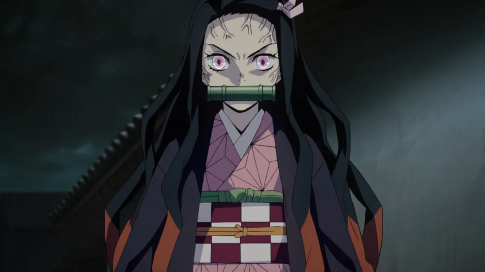
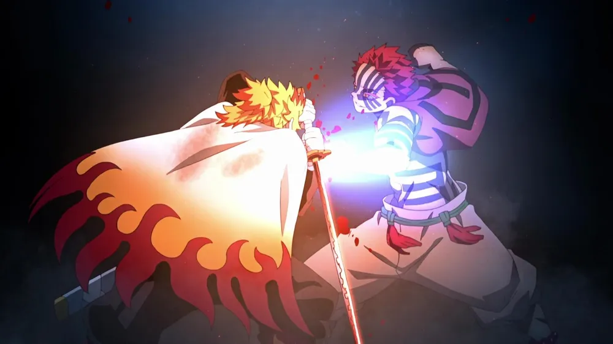

kimetsu no Yaiba, também conhecido pelo título em língua inglesa Demon Slayer é uma série japonesa de mangá shōnen escrita e ilustrada por Koyoharu Gotōge
Ambientada no Japão durante o Período Taishō (1912-1926), a história gira ao entorno de Tanjiro Kamado , um garoto bondoso e inteligente que vive junto com sua mãe e seus irmãos, ganhando dinheiro vendendo carvão, assim como seu falecido pai. Certo dia, ao voltar para casa após ter ido a uma cidade vender carvão, Tanjiro descobre que toda sua família foi atacada por onis, sendo que uma de suas irmãs, Nezuko, é a única que sobreviveu ao ataque. Nezuko então passa a ser um oni, mas ela surpreendentemente ainda demonstra sinais de emoções e pensamentos humanos. Tanjirō decide então se tornar um caçador de onis, e com a ajuda de Nezuko, passa a sair em jornadas pelo Japão a fim de impedir que a mesma tragédia que afetou sua família aconteça com outras pessoas, enquanto que ele busca uma maneira de tornar Nezuko humana novamente.
A temporada de estreia do anime teve transmissão de 6 de abril até 28 de setembro de 2019. Com 26 episódios, a saga inicial de Demon Slayer se passa durante a Era Taisho (1912-1926) e mostra como o carvoeiro Tanjiro Kamado teve a família arruinada por Muzan. Durante um ataque inesperado, o rei demônio mata a mãe de Tanjiro, Kie, e seus irmãos mais novos, Takeo e Rokuta.
Além de Tanjiro, outra sobrevivente do massacre é Nezuko, única irmã do protagonista. Mas esta é acometida por uma maldição que a transforma em um demônio. Cabe então a Tanjiro treinar constantemente para combater os inimigos malignos e derrotar Muzan, para que sua irmã possa voltar ao normal. No seu treinamento, o herói conta com os ensinamentos de Sakonji Urokodaki, um misterioso mestre que, no passado, foi integrante de um grupo de assassinos de demônios.
A segunda temporada de Demon Slayer foi lançada dias antes da estreia do filme para os cinemas, contando a mesma história. Porém, mesmo com o sucesso estrondoso do filme, a série animada leva vantagem por conter mais detalhes sobre o Mugen Train Arc, saga vinda dos mangás. Enquanto o longa tem quase 120 minutos (2h), a primeira parte de Mugen Train contém ao todo 166 minutos.
Uma das diferenças é um momento ocorrido antes dos acontecimentos do filme onde Rengoku ouve falar dos desaparecimentos no Mugen Train. Na série, conhecemos também mais detalhes sobre a vida familiar do novo personagem. A batalha entre Rengoku e o demônio Akaza ganha maior destaque na série, ocupando um episódio inteiro. Portanto, é válido para os fãs não deixarem de acompanhar o filme e os episódios do arco Mugen Train. A parte final da segunda temporada teve 11 episódios lançados entre 5 de dezembro de 2021 a 13 de fevereiro de 2022. A trama desta vez se passa no Distrito do Entretenimento, região onde o caçador de demónios Tengen Uzui leva Tanjiro, Zenitsu e Inosuke para explicar seu plano de investigação do distrito. O caçador acredita que há uma presença maligna na região e que os demônios foram responsáveis por sequestrar suas três esposas. Enquanto isso, Azaka promete a Muzan que matará Tanjiro o quanto antes.